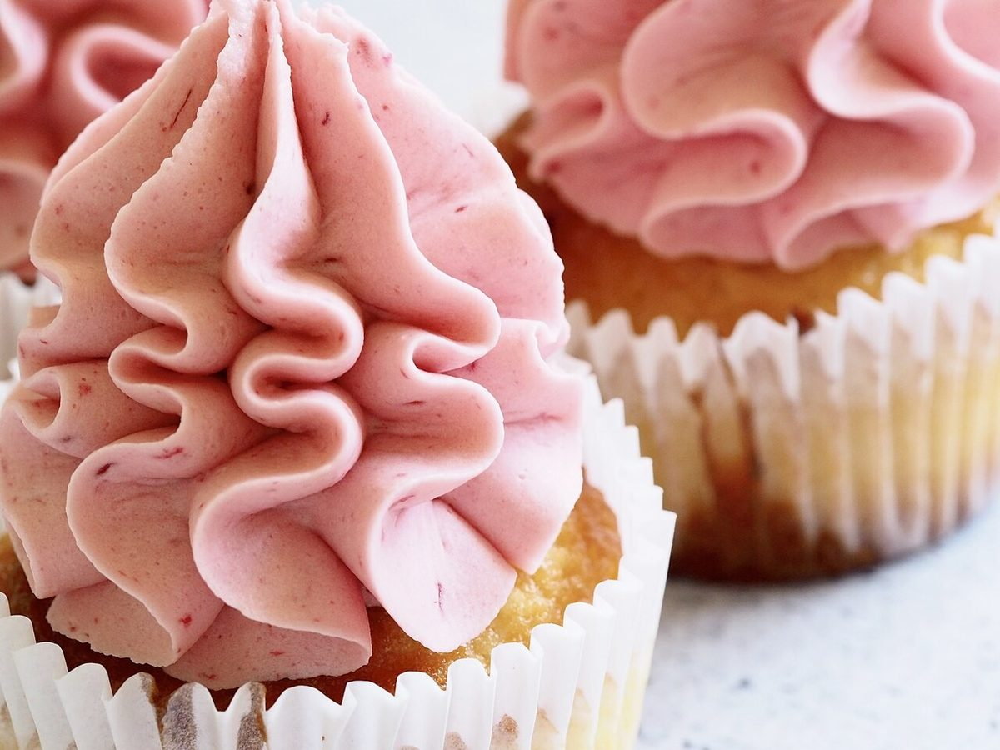
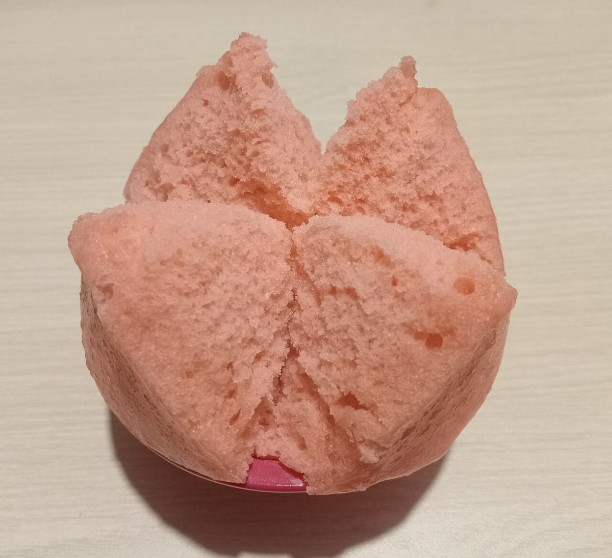
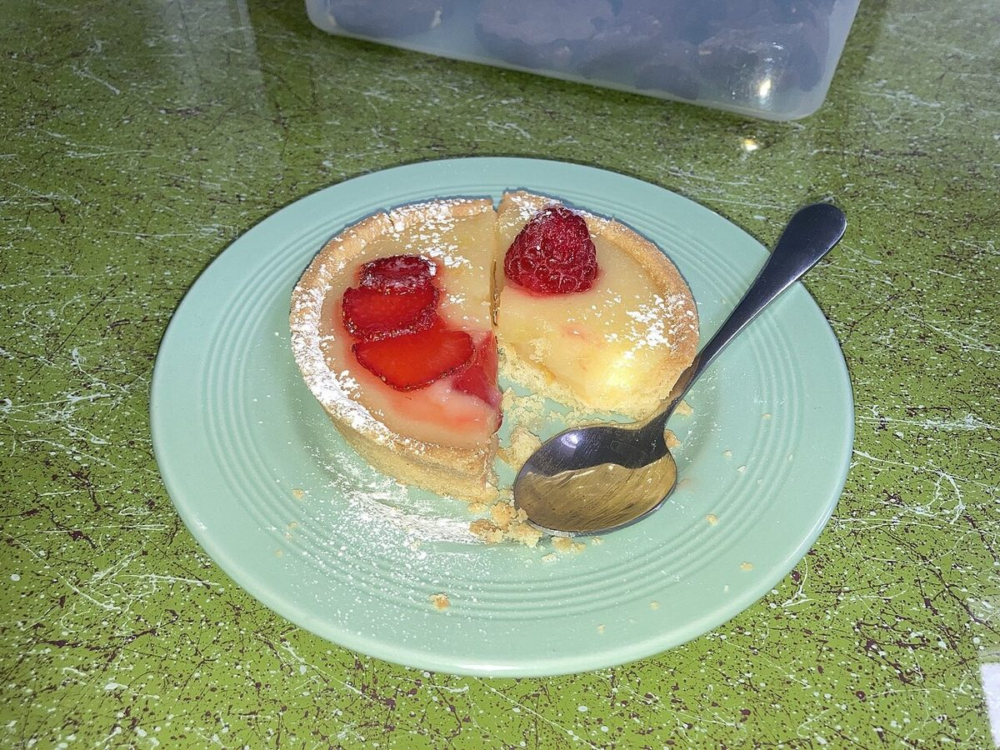
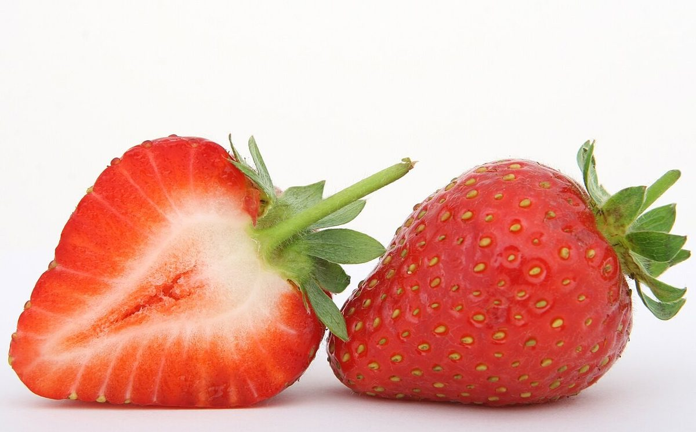
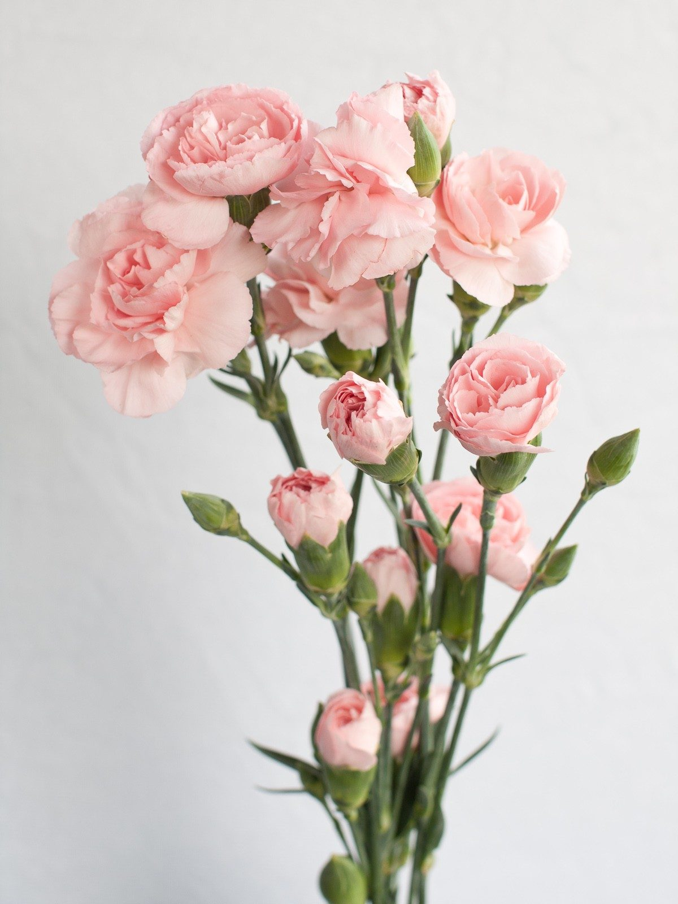
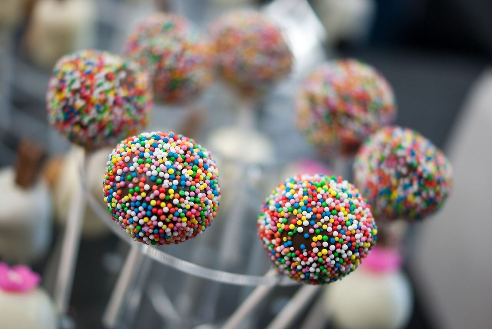

山口県萩市明木のcafe
The 34Sassys cafe（ザサッシーズ）
ひと口ぶんの、やさしい時間を。
営業時間やメニューは準備中です。ご来店前に、お電話かInstagramでお問い合わせください。


このページについて
このページは営業用の試作サンプルです。ページ全体の見せ方(手帖・便せん・付箋)は制作側の案で、店舗の実際とは異なる場合があります。
イメージ写真




写真はフリー素材のイメージです。店舗の実際の様子ではありません。
ご来店前にご確認ください
営業時間準備中(お問い合わせください)
定休日準備中(お問い合わせください)
最新の情報は、お電話またはInstagramでご確認ください。
所在地
〒754-0411 山口県萩市明木3231
電話 090-4621-4624
掲載写真はフリー素材のイメージであり、店舗の実際の様子ではありません。他地域で撮影されたもの、撮影地が不明なものを含みます。